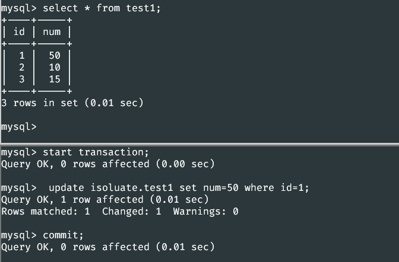

要讨论隔离性要先说说事务
什么是事务
事务是应用程序中一系列严密的操作，所有操作必须成功完成，否则在每个操作中所作的所有更改都会被撤消。也就是事务具有 原子性，一个事务中的一系列的操作要么全部成功，要么一个都不做。
事务的结束有两种，当事务中的所以步骤全部成功执行时，事务提交。如果其中一个步骤失败，将发生回滚操作，撤消撤消之前到事务开始时的所以操作。
事务的 ACID
事务具有四个特征：原子性（ Atomicity ）、一致性（ Consistency ）、隔离性（ Isolation ）和持续性（ Durability ）。这四个特性简称为 ACID 特性。
- 原子性。事务是数据库的逻辑工作单位，事务中包含的各操作要么都做，要么都不做
- 一致性。事 务执行的结果必须是使数据库从一个一致性状态变到另一个一致性状态。因此当数据库只包含成功事务提交的结果时，就说数据库处于一致性状态。如果数据库系统 运行中发生故障，有些事务尚未完成就被迫中断，这些未完成事务对数据库所做的修改有一部分已写入物理数据库，这时数据库就处于一种不正确的状态，或者说是 不一致的状态。
- 隔离性。一个事务的执行不能其它事务干扰。即一个事务内部的操作及使用的数据对其它并发事务是隔离的，并发执行的各个事务之间不能互相干扰。
- 持续性。也称永久性，指一个事务一旦提交，它对数据库中的数据的改变就应该是永久性的。接下来的其它操作或故障不应该对其执行结果有任何影响。
然后问题就来了,假如有两个事务，在事务进行时，同时或间接的控制同一个数据。就会出现操作系统中的类似资源锁资源的问题。具体如下
会引起的问题
- 脏读(Drity Read)：某个事务已更新一份数据，另一个事务在此时读取了同一份数据，由于某些原因，前一个RollBack了操作，则后一个事务所读取的数据就会是不正确的。
- 不可重复读(Non-repeatable read):在一个事务的两次查询之中数据不一致，这可能是两次查询过程中间插入了一个事务更新的原有的数据。
- 幻读(Phantom Read):在一个事务的两次查询中数据笔数不一致，例如有一个事务查询了几列(Row)数据，而另一个事务却在此时插入了新的几列数据，先前的事务在接下来的查询中，就有几列数据是未查询出来的，如果此时插入和另外一个事务插入的数据，就会报错。
解决方法
针对上述会出现的问题，就有了数据隔离。在MySQL中，实现了这四种隔离级别，分别有可能产生问题如下所示：
| 隔离级别 | 脏读 | 不可重复读 | 幻读 |
|---|---|---|---|
| Read uncommited | √ | √ | √ |
| Read commited | × | √ | √ |
| Repeatable read | × | × | √ |
| Serializable | × | × | × |
可能不是很容易理解
直接上手亲自操作一下会更清楚
terminal窗口，开四个窗口，新建一个数据库，建一个表，插入几条数据
create table `test1`(
`id` int(11) unsigned not null auto_increment,
`num` int(11) not null default '0',
primary key(`id`)
)engine=InnoDB auto_increment=4 default charset=utf8;
insert into test1 value(1,5);
insert into test1 value(2,10);
insert into test1 value(3,15);

Msyql中的事务处理
首先设置隔离级别
set session transaction isolation level read uncommitted;
然后开始一个事务
start transaction;
之后就是事务的内容，插入，检索，更新，删除数据等，
最后才是提交数据
commit;
还有一个是rollbak，回滚事务
rollback;
测试
read uncommitted
terminal开启3个窗口，一个进行事务A，一个进行事务B，一个作旁观者观察
A：设置为read uncommitted，启动，查询，但是先不提交，此时的数据是之前的样子
set session transaction isolation level read uncommitted
B：可以不设置隔离等级。启动事务，更新一条数据，然后A再select查看一下数据，可以看到数据已经改变了
update isoluate.test1 set num=50 where id=1;
这时候B再rollback，A再查询数据，又变回去了
经过上面的实验可以得出结论，事务B更新了一条记录，但是没有提交，此时事务A可以查询出未提交记录。造成脏读现象。未提交读是最低的隔离级别。
read committed
先把上面为commit的事务A提交了，再修改A的隔离等级为read committed，启动，查询，但是先不提交，此时的数据依然是之前的样子
set session transaction isolation level read committed
B：启动事务，修改数据，
update isoluate.test1 set num=50 where id=1;
可以看到事务A查询到的数据未改变。
提交事务B的结果

这时候再看A的结果，可以看到已经改变了。
与之前不同的是，read committed解决了read uncommitted的可以读修改前的问题，但是还是会出现在一个事务中，同样的操作，得到了不同的结果的问题。已提交读只允许读取已提交的记录，但不要求可重复读。
大多数数据库的默认级别就是Read committed，比如Sql Server , Oracle。
repeatable read
提交上一次的事务，将隔离等级设位repeatable read
set session transaction isolation level repeatable read;
在事务B中修改更新数据(1)，事务A此时看不到变化(2)，事务B提交后(3)，事务A还是看不到变化(4)。
事务A提交后就可以看到事务B中修改的数据了
然而，当我们在事务B中插入一条数据或者删除一条数据，然后提交，之后在事务A中再重复一样的操作，就会出现问题了
删除也是一样，只不过不是报错，而是卡住
关于幻读，找到了一个比较好的解释：https://segmentfault.com/a/1190000016566788
幻读比较白话的解释
接用那位老哥的比较白话的解释：
幻读，并不是说两次读取获取的结果集不同，幻读侧重的方面是某一次的 select 操作得到的结果所表征的数据状态无法支撑后续的业务操作。更为具体一些：select 某记录是否存在，不存在，准备插入此记录，但执行 insert 时发现此记录已存在，无法插入，此时就发生了幻读。
幻读和不可重复的区别
(1) 不可重复读是读取了其他事务更改的数据，针对update操作
解决：使用行级锁，锁定该行，事务A多次读取操作完成后才释放该锁，这个时候才允许其他事务更改刚才的数据。
(2) 幻读是读取了其他事务新增的数据，针对insert和delete操作
解决：使用表级锁，锁定整张表，事务A多次读取数据总量之后才释放该锁，这个时候才允许其他事务新增数据。
具体可以看：https://cloud.tencent.com/developer/article/1450773
Mysql的默认隔离级别就是Repeatable read。
serializable
set session transaction isolation level serializable;
serialization等级就简单多了，直接从源头上解决了了问题
当要处理可能会冲突的数据时，直接就卡住不动，直到对方结束。
Serializable 是最高的事务隔离级别，同时代价也花费最高，性能很低，一般很少使用。在该级别下，事务顺序执行，不仅可以避免脏读、不可重复读，还避免了幻读。